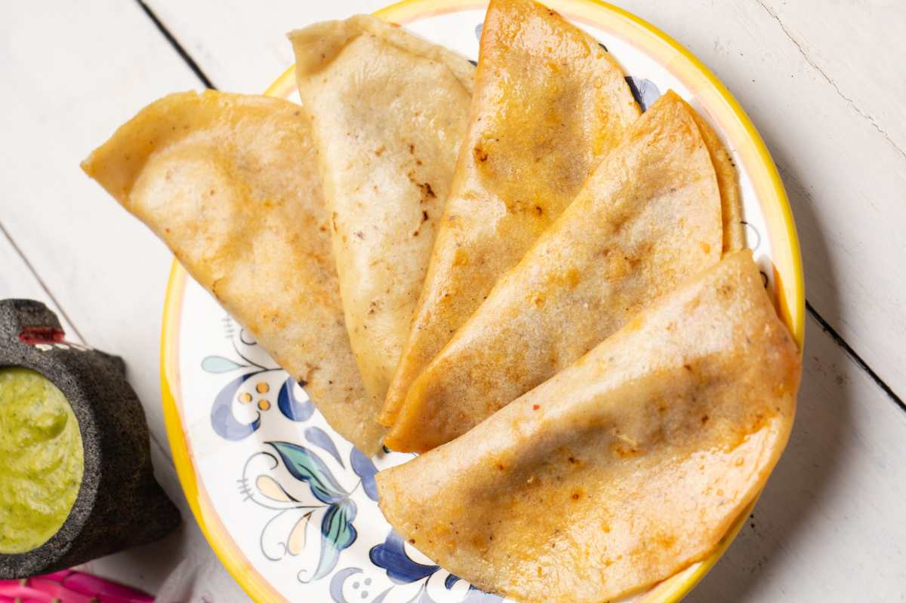

Steamed Tacos (Tacos al Vapor)
Homepage

Delicious Classical Mexican Tacos al Vapor
Tacos al vapor are classic Mexican street-style tacos wrapped tightly and steamed until exceptionally tender and infused with rich flavor.
They are traditionally filled with seasoned mashed potatoes, refried beans, or shredded beef.
Steaming softens the corn tortillas completely, allowing the rich oil and savory spices to permeate every single bites
Ingredients:
- 12 small corn tortillas
- 2 cups mashed potatoes seasoned with salt and pepper
- 1 cup refried pinto beans
- 2 Tablespoons vegetable oil
- 1/2 cup finely chopped white onion
- Fresh cilantro for garnish
- Salsa verde or pickled jalapeños to serve
Steps:
- Warm the corn tortillas lightly so they become pliable without breaking.
- Spread a spoonful of seasoned potatoes or refried beans onto each tortilla and fold in half.
- Brush the outside of each folded taco lightly with vegetable oil.
- Line a steamer pot with parchment paper or foil and stack the tacos gently inside.
- Cover tightly with a clean kitchen towel and the lid to trap the steam.
- Steam over medium-low heat for 20 to 25 minutes until thoroughly hot and tender.
- Serve immediately with salsa verde, pickled jalapeños, and finely chopped onion.